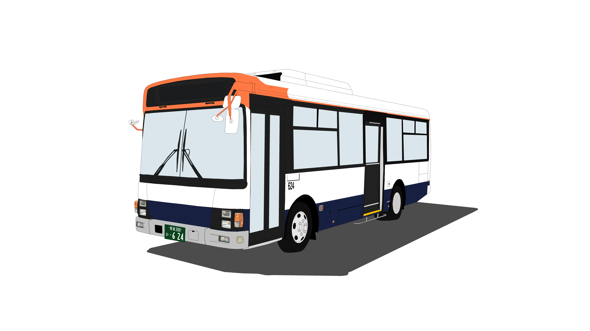

いすゞ エルガミオ PA-LR234J1改
いすゞ自動車が2004年～2007年に製造した中型路線バス。日野自動車でもOEM供給されたが外見上での見分けは困難
- 製造年：2004~2007
- 導入年：2006年
- 導入数：16台
- 導入営業所：黒駒・青波
- 過去在籍営業所：なし

いすゞ自動車が2004年～2007年に製造した中型路線バス。日野自動車でもOEM供給されたが外見上での見分けは困難
いすゞ自動車が2022年~製造している都市型中型路線バス。EDSSを搭載 エンジンがうんち